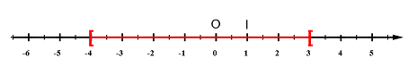
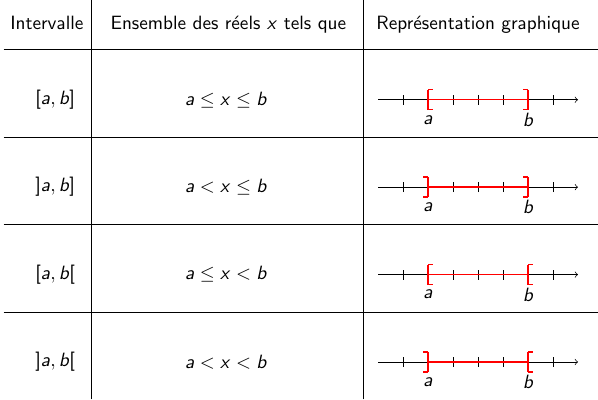
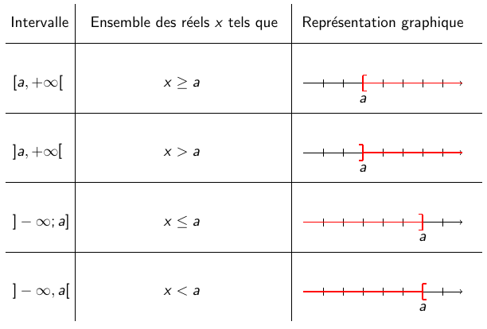
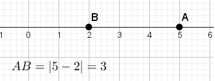
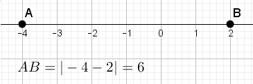
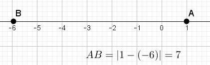
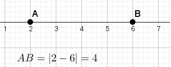

Cours seconde : intervalles, inégalités, inéquations
Rappel : on note $a>b$ lorsque $a-b$ est strictement positif, et $a\geq b$ lorsque $a-b\geq 0$.Intervalles
L'ensemble des nombres réels $x$ tels que $-4\leq x < 3$, c'est-à-dire tels qu'à la fois $x\geq -4$ et $x< 3$ est représenté par la partie coloriée sur la droite numérique suivante :

On l'appelle l'intervalle $[-4;3[$. Le sens des crochets indique si la borne appartient ou non à l'intervalle :
- en $-4$, le crochet est tourné vers l'intérieur (on dit qu'il est fermé), car $-4$ appartient à l'intervalle.
- en $3$, le crochet est tourné vers l'extérieur (on dit qu'il est ouvert), car $3$ n'appartient pas à l'intervalle.
L'ensemble des nombres réels $x$ tels que $x\geq 2$ est aussi un intervalle, illimité à droite : on le note $[2,+\infty[$ (lire $2$, plus l'infini). Il y a donc 8 types d'intervalles :


Intersection et réunion de deux intervalles :
Soit $I$ et $J$ deux intervalles.
- l'intersection de $I$ et de $J$ est l'ensemble des réels qui appartiennent à la fois à $I$ et à $J$. On le note $I\cap J$.
- la réunion de $I$ et de $J$ est l'ensemble des réels qui appartiennent à $I$ ou à $J$. On le note $I\cup J$.
Inégalités et inéquations
- Transformations autorisées sur les inégalités :
- on peut ajouter ou soustraire un même nombre à chaque membre d'une inégalité : si $a\leq b$, alors $a+c\leq b+c$.
- on peut ajouter membre à membre deux inégalités de même sens : si $a\leq b$ et $c\leq d$, alors $a+c\leq b+d$.
- on peut multiplier ou diviser chaque membre d'une inégalité par un même nombre non nul, à condition de changer le sens de l'inégalité si ce nombre est négatif.
- une inéquation d'inconnue $x$ est une expression de la forme $A(x)\leq B(x)$ (ou $A(x)<B(x)$) où $x$ est une variable inconnue. Résoudre l'inéquation, c'est trouver toutes les valeurs de $x$ pour lesquelles l'inégalité est satisfaite : l'ensemble de ces réels $x$ est alors appelé ensemble des solutions de l'inéquation.
- on dit que deux inéquations sont équivalentes lorsqu'elles ont le même ensemble de solutions.
-
Transformations autorisées sur les inéquations Les manipulations algébriques suivantes transforment une inéquation en une inéquation équivalente :
- ajouter ou soustraire un même nombre aux deux membres
- multiplier ou diviser les deux membres par un même nombre positif non nul
- multiplier ou diviser les deux membres par un même nombre négatif non nul, à condition de changer le sens de l'inégalité
- développer, factoriser, réduire les membres.
Valeur absolue
- Définition : La valeur absolue d'un nombre réel $x$ est la distance entre le point $O$ et le point $M$ d'abscisse $x$ sur une droite graduée. On a : $$\left\{ \begin{array}{rcll} |x|&=&x&\textrm{ si }x\geq 0\\ |x|&=&-x&\textrm{ si }x<0. \end{array}\right.$$
- Exemples : $$\begin{array}{lll} |2|=2&\quad |-3|=3&\quad |10,\!4|=10,\!4\\ |-3,\!2|=3,\!2&\quad |\pi|=\pi&\quad|-\sqrt 2|=\sqrt 2. \end{array}$$
- La distance entre deux réels $a$ et $b$ est la distance des points $A$ d'abscisse $a$ et $B$ d'abscisse $b$ sur une droite graduée. Elle vaut $|a-b|$.
- Exemples :
- la distance entre $5$ et $2$ vaut $3$.

- la distance entre $-4$ et $2$ vaut $6$.

- la distance entre $1$ et $-6$ vaut $7$.

- la distance entre $2$ et $6$ vaut $4$.

- la distance entre $5$ et $2$ vaut $3$.
- Propriété : L'intervalle $[a-r,a+r]$ est l'ensemble des réels $x$ tels que $|x-a|\leq r$.
- Pour un nombre réel $x$ et un entier naturel $n$, on appelle valeur approchée de $x$ à $10^{-n}$ près un nombre réel $d$ tel que $$|x-d|\leq 10^{-n}.$$ Pour $x$ fixé, ce nombre n'est pas unique. On choisit en général pour $d$ un nombre décimal avec une partie décimale comportant $n$ chiffres. Par exemple, $3,\!14$ est une valeur approchée à $10^{-2}$ près de $\pi$.
Pour compléter...
Intervalles, inégalités, inéquations, valeur absolue